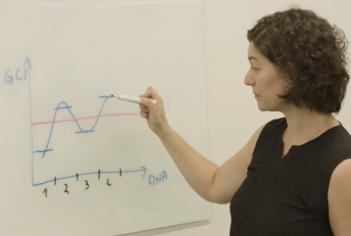

Helminth Bioinformatics is an emerging subject in parasitology. This is a highly tailored course where participants learn how to tackle the difficulties of dealing with big, repetitive genomes of non-model organisms, for which little supprot exists elsewhere. Alongside colleagues from the Wellcome Genome Campus Advanaced Courses and Conferences, I led and designed this 5-day residental overseas course that takes participants from using the very basic skills of “internet bioinformatics” on Day 1 to be self-sulfficient and independently analyse complex genomic and transcriptomic data by Day 5 of the course. We ran this course for the first time in September 2019 at the University of Accra, Ghana. We are hoping to deliver this course again soon in Thailand and in Uruguay. Check it out: Helminth Bioinformatics.
Online courses have been a major contribution in my career. I am a true believer in online and social learning. Alongside the Wellcome Wellcome Genome Campus Advanaced Courses and Conferences and FutureLearn (a branch of the OpenUniversity) I led the development of three online courses covering various aspects of Bacterial Genomics and Bioinformatics. These courses are a very gentle introduction to computational biology.
The release of the first course was launched in this News Item
I also participate in more traditional teching in the form of lectures and practical demostrations that are part of the Natural Science Tripos, Microbiology and Parasitology at the Dept of Pathology, University of Cambridge. My lectures cover Trematode and Cestode Biology.